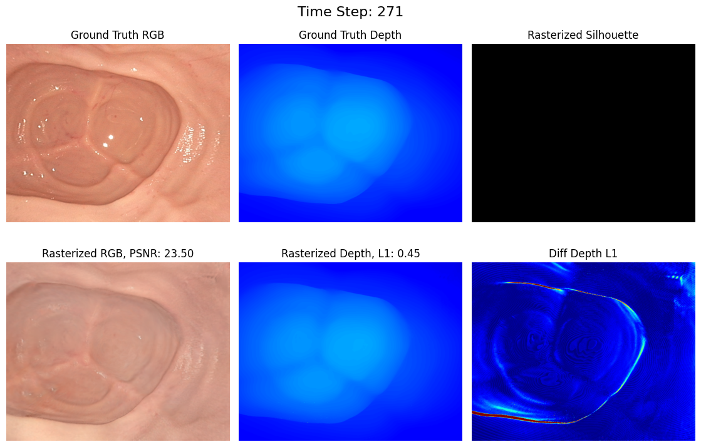

The body gives almost no room, its tissue moves and deforms, the view is a narrow cone, and a mistake is irreversible. How robots see, reach, and act inside that workspace — from endoscopy and teleoperation to continuum tools and task autonomy — from first principles, drawn live and grounded in the ICRA / IROS / CoRL / RSS and CVPR 2026 corpora.
Five ideas, each a live diagram then plain words — why the body is the hardest workspace, how a camera inside a tube builds a map, how teleoperation scales and steadies motion, how continuum robots follow anatomy, and how autonomy is built one checked step at a time. Each has a ‘the actual math’ toggle.
robotic arms reproduce the surgeon's hand motions at scale; ROBODOC and AESOP are the prototypes.
da Vinci extends dexterity through a port; laparoscopic and endoscopic techniques become the norm.
flexible-backbone and magnetically steered tools reach targets rigid arms cannot; catheters become programmable.
deep networks segment anatomy, recognize phase, track deformable tissue, and build 3D maps from endoscope video.
learned policies close sutures, run subtasks, and large pretrained models begin encoding surgical knowledge.
Every other robotics domain works in open space. Medical robotics works inside a living, moving patient, through an opening that may be a few millimetres wide. That is not just a size constraint: the forces must be right because tissue tears, the geometry changes because the body breathes, and the view is partial because a wide incision is the injury you are trying to avoid.
This is why medical robotics is not just miniaturized manipulation. The cost of a mistake is irreversible, the workspace deforms, specular highlights confuse vision, and every action must be planned around what the imaging shows at that instant. The rest of this explainer traces how the field answers those four hard constraints — sensing, actuation, autonomy, and learning — one at a time.
The workspace is a compact subset W ⊂ R³ with a moving, deformable boundary; every planned trajectory must satisfy tissue force limits f ≤ f_max at all times.
Contact forces are viscoelastic: F(t) = kδ(t) + cδ′(t) where δ is tissue deformation — stiffness k and damping c vary by tissue type and hydration state.
Perception in open environments is hard; perception through an endoscope is a different problem. The field of view is a narrow cone. The walls reflect light in bright, moving specular spots that confuse texture matching. The lumen itself deforms with every breath and heartbeat. And there is no GPS, no prior map, no static background.
Reconstructing a useful 3D model from that stream requires simultaneous localization and mapping designed for this setting: monocular depth cues, photometric models that handle specular surfaces, and temporal filtering against breathing motion. When that reconstruction works, it gives the surgeon — and an autonomous system — a stable picture of space inside a constantly moving tube.
Endoscopic SLAM: minimize reprojection error over a deformable map — {T_i, D_j} = argmin Σ_{i,j} ρ( ||p_j − π(T_i, D_j)||² ) subject to a deformation prior.
Specular reflection is Lambertian + Phong: L = k_d (n·l) + k_s (r·v)^n_s; detecting and masking specular pixels is a prerequisite for stable feature tracking.
A surgeon's hand moves naturally at centimetre scale and with the tiny, involuntary oscillations of tremor. A teleoperated instrument maps that motion to sub-millimetre movement at the tip — typically a 3:1 to 10:1 reduction — while a tremor filter on the signal path removes the high-frequency component that does not correspond to intent.
The kinematic constraint that makes port-based surgery possible is the remote center of motion: the arm is built, or controlled, so the shaft always pivots around a fixed point in space at the incision. This means the port opening does not tear as the surgeon moves. Every degree of freedom at the console becomes a degree of freedom at the instrument tip, with no force on the wound edge.
Motion scaling: x_instrument = x_console / s, where s ∈ [3,10] reduces tremor by a factor of s while also reducing bandwidth — the surgeon feels less force but also less noise.
Remote center of motion (RCM): a kinematic constraint Φ(q) = p_port − f(q) = 0 fixes the insertion point; enforced via constrained Jacobian J_c q′ = 0.
The body's internal channels — the bronchi, the colon, the vasculature — are winding curves, not straight lines. A traditional serial robot arm, with a fixed number of rigid links and revolute joints, cannot follow them without applying large lateral forces that damage tissue. Continuum robots replace links with a flexible backbone that bends along its whole length, so the shape of the robot matches the path it takes.
Controlling that shape is the hard part. The relationship between the actuator input (cable tension, pneumatic pressure, magnetic field) and the tip position is highly nonlinear and changes as the robot interacts with tissue. Learned models, Cosserat-rod mechanics, and vision-based estimation all contribute to steering the tip reliably to where the surgeon directs it.
Cosserat rod model: d/ds(n) = −f, d/ds(m) = −e_3 × n − l; arc-length s, internal force n, moment m, distributed load f/l. Boundary conditions set by cable tensions at the base.
Tip-position control solves the nonlinear BVP numerically; learned corrections Δx = πθ(q, x_desired) compensate for hysteresis and model error.
Full autonomy in surgery is nowhere near deployment, and the reason is not technical capability alone: it is verification. Before a robot action can be accepted, the system must confirm that the instrument is where imaging says it is, that the motion will not breach a structure marked off-limits, and that the surgeon can stop it in time. This is why autonomy in medical robotics is built as a ladder: one supervised subtask proven safe, then extended.
The tools that make each rung possible are the same across levels: real-time segmentation that knows where nerves, vessels, and tumour margins are; a safety envelope derived from that segmentation; and a planning layer that searches for motions inside the envelope only. The higher rungs add learned phase recognition — what step of the operation is this? — so the system knows which autonomy mode is appropriate right now.
Safety envelope as a control barrier function (CBF): h(x) ≥ 0 defines safe states; CBF constraint h′(x) + α(h(x)) ≥ 0 guarantees forward invariance.
Phase recognition as a sequence model: p(phase_t | obs_{1:t}) from a recurrent or attention-based classifier over image + kinematics — gating which autonomous subtask is active.

From unaided hands to teleoperated arms to task-autonomous systems — what changes at each step and what the trade-off is.
| Who acts | Precision | Autonomy | The catch | |
|---|---|---|---|---|
| Manual surgery | Surgeon alone, unaided | limited by tremor and fatigue | none | no scale reduction; ergonomically demanding |
| Teleoperated robot (surgeon in loop) | Surgeon via robot, motion scaled + filtered | sub-millimetre | none (surgeon decides every move) | latency; cost; no safety envelope |
| Task-autonomous (supervised) | Robot executes subtask; surgeon monitors | machine precision | one supervised subtask at a time | verification is hard; approval pathways are long |
Every family below delivers one or more of these — the recurring reasons medical robotics has moved from novelty to clinical standard.
Motion scaling and tremor filtering bring instrument-tip accuracy to sub-millimetre levels — the difference between clipping a nerve and sparing it.
Continuum and steerable tools follow channels no rigid arm can reach, opening minimally-invasive paths to targets that once required open surgery.
The surgeon works seated at a console while the instruments move at the patient; remote telepresence extends that to any distance.
Systems that read live imaging, segmentation, and force can adjust mid-motion when anatomy shifts, a breath displaces tissue, or resistance changes.
Simulators, phantoms, and synthetic data let surgeons practice rare procedures and let algorithms train without ever touching a patient.
Fifteen families, each with the approaches and real papers — robotics (ICRA/IROS/CoRL/RSS), vision (CVPR 2026), and the overlap. Jump to any:
Mapping a surgeon's gross hand motion—tremor and all—to sub-millimetre instrument displacement through a fixed port, while preserving force feedback, within 5 ms round-trip latency.
The surgeon's console must translate intent into instrument motion — scaling, filtering, and adding haptic or visual feedback without introducing dangerous latency.
Sensory gloves, augmented-reality overlays, and learned user models extend the interface beyond a joystick toward something closer to direct touch.
Building a metrically consistent 3D map of a deforming, specular lumen from a monocular endoscope camera, with no static background and only 1–2 ms per frame to spare.
Building a stable 3D reconstruction of the lumen from a monocular endoscope — specular, wet, deforming — requires SLAM tuned for this setting, not ported from an outdoor camera.
Gaussian splatting and dense depth networks have recently brought reconstruction quality close to what surgical planning needs.
Guiding a bevel-tip needle along a curved path through heterogeneous tissue to a point-target ≤2 mm in diameter, with no visual feedback beyond ultrasound slices.
A bevel-tip needle bends as it advances through tissue; control that bending and you can steer around obstacles to reach deep targets without open surgery.
Resolution-optimal planning and MPC make the path precise enough for lung biopsy and vascular access.
Computing the cable tensions needed to steer a tendon-driven flexible backbone to a desired tip pose, when stiffness varies with temperature and hysteresis makes the tension–shape map irreversible.
A flexible backbone bends continuously rather than at discrete joints, letting the robot follow winding anatomy. Tendon tension, pneumatics, or magnetic fields steer the shape.
Hysteresis in tendon drives and nonlinear stiffness in soft bodies are the control challenges the field keeps returning to.
Steering a compliant catheter through branching vessels whose geometry is known only from low-resolution fluoroscopy, under pulsatile blood flow that deflects the tip at every heartbeat.
Steering a catheter through branching vessels to a target in the heart or brain requires perception of vessel geometry from fluoroscopy and a controller that handles the catheter's compliance and the pulsatile flow.
Simulation environments and RL have recently enabled closed-loop navigation in realistic vascular phantoms.
Classifying which of 8–12 discrete surgical phases is currently executing, in real time, from a video stream where phase transitions are gradual and often invisible to the eye.
Knowing what step of the operation is happening — the surgical phase — is the prerequisite for any context-sensitive autonomy: the right tool, the right alert, the right autonomous mode.
Large-scale surgical video datasets and self-supervised pretraining have made phase recognition reliable enough to gate assistance systems.
Executing autonomous suturing — driving a curved needle through tissue at the correct angle and depth, then pulling the thread without cutting — with only vision and force as feedback.
Closing a suture, completing a capsulorhexis, or repositioning tissue are tasks with clear start and end conditions, making them candidates for learned autonomous execution under supervision.
Control barrier functions and force-vision integration are the safety tools that keep these policies inside acceptable bounds.
Registering live intraoperative imaging (OCT, ultrasound, or X-ray) to a 3D preoperative plan, while the organ shifts 2–5 mm per breath and the imaging is 2D or low-resolution.
Intraoperative imaging — ultrasound, fluoroscopy, OCT, or MRI — gives the robot a live picture of tissue position that no preoperative plan can substitute for once the body is open and breathing.
Differentiable rendering and deformation-aware registration close the gap between the image and what the instrument actually meets.
Maintaining stable ultrasound image quality — defined by probe contact force, tilt angle, and acoustic coupling — on a moving, curved body surface without pre-planned scan trajectories.
Ultrasound scanning requires maintaining probe contact, angle, and pressure against a moving body surface — a contact control problem, not just an imaging one.
Adaptive controllers that read image quality as their feedback signal outperform fixed-trajectory scans.
Decoding the user's intended finger positions from surface EMG — noisy, electrode-placement-sensitive, session-variant signals — with latency under 100 ms.
A prosthetic hand or exoskeleton must interpret the user's intent from residual signals — EMG, IMU, pressure — and translate them into motion that feels natural and does not fatigue.
Multi-stage neural decoders and tactile feedback loops have improved intent-to-motion latency and grip accuracy.
Actuating an untethered magnetic robot or capsule through a fluid-filled cavity using only an external rotating magnetic field, with no direct force sensing or proprioception.
A wireless capsule or magnetically steered micro-robot can reach sites no catheter or endoscope can access, but it gives up the mechanical connection that makes force control straightforward.
External magnetic fields, acoustic streaming, and swarm coordination are the actuation options; PINN-based flow models help predict where the robot goes.
Segmenting anatomy reliably from intraoperative images where training data is scarce, domain shift is severe, and the label budget is <50 annotated volumes.
Segmenting anatomy in intraoperative images is the backbone of image-guided robotics: no accurate safety envelope without accurate masks, and no accurate masks without models that handle the domain.
Foundation model adaptation and deformable registration address the data-scarce, rapidly shifting intraoperative setting.
Aggregating diagnostic evidence from a gigapixel whole-slide image — spanning 100,000 × 100,000 pixels — where the diagnostic signal may occupy only 0.1% of the area.
Whole-slide pathology images are gigapixel; a model that reads them must aggregate evidence across scales, from cell-level morphology to tissue-level architecture.
Self-supervised pretraining on large pathology corpora and topological priors are moving diagnostic accuracy toward and past human expert level.
Generating factually correct radiology reports — where a hallucinated finding triggers unnecessary treatment — while covering all clinically relevant findings in a single pass.
A model that reads a scan and writes the report must be factually accurate: a hallucinated finding is a diagnostic error. RL and evidence grounding are the current tools for pushing accuracy past what supervised training alone achieves.
Benchmarks that test complex multi-step reasoning expose how far the best models still are from a reliable second-reader.
Generating anatomically valid 3D medical volumes for rare conditions where fewer than 200 real training cases exist, without producing topologically impossible structures.
Rare conditions have too few real images to train a diagnostic model. Generative models can fill that gap — but only if the generated images are anatomically correct: no spurious structures, no topological errors.
Structure-aware diffusion and topology controls are the answers the field has found.
ROBO ICRA/IROS 2025 · CoRL/RSS 2024 CVPR CVPR 2026 BOTH the seam — titles are real, from the analyzed corpora.
Medical robotics has changed surgery — and it is still far from the full autonomy the field aims at. What is genuinely still hard: